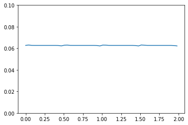

3.1. A plane wave on a square#
We solve the two-dimensional wave equation to find \(H: [0,T]\to H^1(\Omega)\) and the vector field \(E: [0,T]\to H(\mathrm{div})\) are
\[\begin{split}
\begin{aligned}
\partial_t E(t,x) &= -\nabla H(t,x),&t\in(0,T),x\in\Omega\\
\partial_t H(t,x)&= -\mathrm{div} E(t,x) + f(t,x),&t\in(0,T),x\in\Omega\\
H(0,x) &= \exp(-400(y-1/2)^2),&t\in(0,T),x\in\Omega\\
E(0,x) &= 0,&x\in\Omega\\
H(t,x) &= 0,&t\in(0,T),x\in\partial\Omega
\end{aligned}
\end{split}\]
for \(\Omega=(0,1)^2\) and a suitable source term \(f\).
from ngsolve import *
import dualcellspaces as dcs
from time import time
from ngsolve.webgui import Draw
After the necessary imports we define some parameters and the mesh
maxh = 0.03
tend = 2
order = 2
H0 = CF(exp(-20**2*((y-1/2)**2)))
E0 = CF((0,0))
mesh = Mesh(unit_square.GenerateMesh(maxh=maxh))
Draw(mesh);
We define the spaces from dualcellspaces.
fesH = dcs.H1DualCells(mesh, order=order)
fesE = dcs.HDivPrimalCells(mesh, order=order)
To define the bilinear forms we need to define the differential symbols using special integration rules:
E, dE = fesE.TnT()
H, dH = fesH.TnT()
dxH = dx(intrules=fesH.GetIntegrationRules()) #integration rule with points corresponding to the nodal basis functions of `fesH`
dSw = dx(element_boundary=True,intrules=dcs.GetIntegrationRules(2*order+6)) #higher order integration over primal element boundaries for cell method functions
dxw = dx(intrules=dcs.GetIntegrationRules(2*order+6)) #higher order integration over primal elements for cell method functions
Assembling the bilinear forms. The mass bilinear forms assembling is optimized for the block-diagonal sparsity pattern.
massE = fesE.Mass(Id(2))
massH = fesH.Mass(1)
massinvE = massE.Inverse()
massinvH = massH.Inverse()
normal = specialcf.normal(2)
Grad = BilinearForm(-H*div(dE)*dxw+H*dE*normal*dSw, geom_free=True).Assemble().mat
lffH = LinearForm(dH*H0*dxH).Assemble()
The maximal admissible time step may be estimated using a simple power iteration
def estimate_tau(mat, maxsteps = 1000, tol = 1e-4):
vec = mat.CreateColVector()
vec.SetRandom()
tmp = vec.CreateVector()
lam = 0
for i in range(maxsteps):
#print(i,end='\r')
tmp.data = mat * vec
lamnew = InnerProduct(tmp,vec)
tau = 2/sqrt(lamnew)
#res=(lamnew*vec-tmp).Norm()
tmp *= 1/tmp.Norm()
#print(lamnew)
diff = (tmp-vec).Norm()
if diff<tol: return tau
vec.data = tmp
lam = lamnew
print("did not converge, last diff = ",diff)
return tau
tau = estimate_tau(massinvH@Grad.T@massinvE@Grad)
print("estimated timestep tau: {:e}".format(tau))
tau*=0.9
estimated timestep tau: 1.438193e-03
It remains to set the initial conditions…
gfE = GridFunction(fesE)
gfH = GridFunction(fesH)
gfH_history = GridFunction(fesH,multidim=0)
gfH.vec.data = massinvH*lffH.vec
gfE.vec.data[:] = 0.
#scene = Draw(gfH,mesh,intpoints=dcs.GetWebGuiPoints(2),order=2,autoscale=False,min=0,max=1)
gfE.vec.data = tau/2*massinvE@Grad*gfH.vec
… and start the time loop
t = 0.
i = 0
drawevery = 50
now = time()
nowstart = now
times = []
energies = []
tmpH = gfH.vec.CreateVector()
tmpE = gfE.vec.CreateVector()
subtime = 0
with TaskManager():
while t<tend:
if i%drawevery == 0:
timepassed = time()-now
before_energy_time = time()
gfH_history.AddMultiDimComponent(gfH.vec)
#scene.Redraw()
times.append(t)
tmpH.data = massH * gfH.vec
tmpE.data = massE * gfE.vec
energies.append(InnerProduct(gfE.vec,tmpE)+InnerProduct(gfH.vec,tmpH))
#print("\r time = {}\t step = {}\t energy = {}\t current dofs/s = {:e}".format(t,i,energies[-1],(fesE.ndof+fesH.ndof)*drawevery/timepassed),end="")
subtime += time()-before_energy_time
now = time()
i=i+1
t+=tau
gfH.vec.data += -tau*massinvH@Grad.T*gfE.vec
gfE.vec.data += tau*massinvE@Grad*gfH.vec
comptime = time()-nowstart-subtime
print("\n timesteps: {}\t dofs: {}\t dofs per second: {:e}".format(i, (fesE.ndof+fesH.ndof),(fesE.ndof+fesH.ndof)*tend/tau/comptime))
timesteps: 1545.1491700646156 dofs: 162256 dofs per second: 1.328608e+08
scene = Draw(gfH_history,mesh,intpoints=dcs.GetWebGuiPoints(2),order=2,autoscale=False,min=0,max=1,animate=True)
We observe preservation of a modified (discrete) energy:
import matplotlib.pyplot as pl;
pl.plot(times,energies);
pl.ylim((0,0.1));
